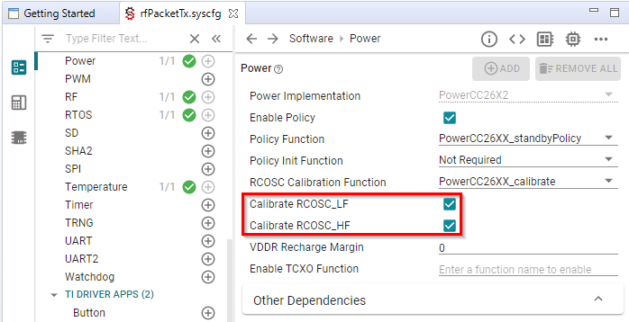
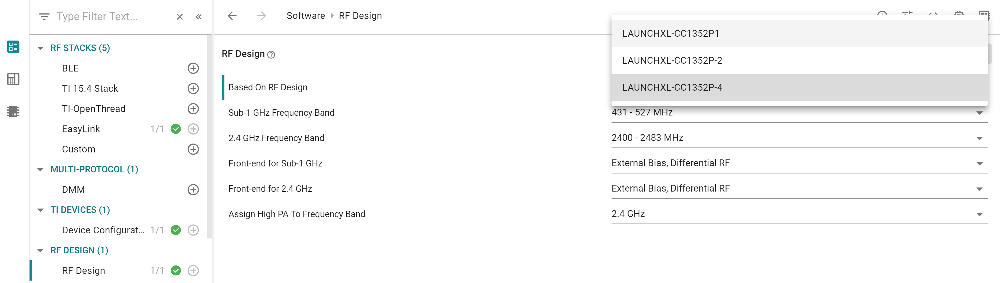

Custom Hardware¶
This section will explain how modify the board files from the SimpleLink CC13xx/CC26xx SDK to enable code to run on custom hardware.
A full guide to hardware configuration can be found in the CC13xx/CC26xx Hardware Configuration and PCB Design Considerations app note.
Introduction to Board Files¶
TI-RTOS7 drivers rely on “board files” for their board-specific configuration
parameters. The convention is to name these files based on the development kits
provided by TI in addition to a generic Board.h with Board_* definitions
to map the proper pins defined by ioc.h.
In the examples provided in the SDK the board file is typically named after the board used.
For example, for the examples found under CC1310 Launchpad, TI drivers , the following comprise the set of board files used by the CC13xx or CC26xx LaunchPad development kit:
Board.h
CC1310_LAUNCHXL.h
CC1310_LAUNCHXL.c
TI recommends to start with these existing set of board files when porting an application to custom development boards. When modifying or porting these board files, user should consult with TI Drivers API Reference.
Quick guide to Creating a Custom Board File¶
Here the names of the files used for the CC1310 Launchpad is used. If you are using a different Launchpad the names of the board files reflect this. This is valid for all packet sizes. Make sure that the file you are editing is locally in the project and not a file located in the SDK installation.
Open CC1310_LAUNCHXL.h
For each resource, assign a IOID number according to what is used in the custom PCB.
As an example: If the UART RX pin is connected to DIO 10 set:
#define CC1310_LAUNCHXL_UART_RX IOID_10If UART is not used, set all 4 UART pins to PIN_UNASSIGNED
Only board signal alias you are using in your code. All other should be set to PIN_UNASSIGNED.
Test that your code compiles and run.
Rename the board files to reflect the name of your design.
- As an example: If the UART RX pin is connected to DIO 10 set:
#define CC1310_LAUNCHXL_UART_RX IOID_10
If UART is not used, set all 4 UART pins to PIN_UNASSIGNED
DIO mapping¶
Board_init() is called from main() and calls the following functions: * PIN_init (used if the PIN driver is used) * Board_initHook
The PIN_init uses BoardGpioInitTable as input. Modify this table to correspond to your board.
The Board_initHook() function is used to run board specific functions. On the launchpad CC1310_LAUNCHXL_shutDownExtFlash is called. If the custom board doesn’t have an external flash, the call to this function should be removed.
If the GPIO driver is used: The GPIO_setConfig function uses the table defined by GPIO_PinConfig in CC1310_LAUNCHXL.c. Modify this accordingly to the board you are using. The CC1310_LAUNCHXL_GPIOName enum in CC1310_LAUNCHXL.h have to be changed in the same manner. The table in the .c file is the physical pin mapping, the table in the .h file is the logical name used in the code. The first entry in the table in the .h file correspond to the first entry in the .c file and so on.
The GPIO and PIN tables define the DIO default state.
Unused drivers¶
Note
Only applicable for CC13X0/CC26X0, for all other devices this is done by SysConfig.
The board files contains declarations of objects used by the drivers. If a driver is not used the compiler should in most cases discard the objects but in some cases the unused objects could consume memory. In these cases the unused objects could be deleted.
To delete the objects do as follows:
Remove the following variables from <BOARD>.h:
All of PIN defines <BOARD>_<Module>_<PIN>
All of typedef enum <BOARD>_<Module>Name
Remove the following variables from <BOARD>.c:
<Module>_count
<Module>_config
<module>CC26xxHWAttrs
<module>CC26xxObjects
Any other local variables used by the above
Remove the following variables from the Board.h:
All peripherals of Board_<Module>
As long as the items are deleted from <BOARD>.h the compiler will give a warning/ error if some other entries are not deleted.
Unused peripherals¶
Note
Only applicable for CC13X0/CC26X0, for all other devices this is done by SysConfig.
In some cases the driver is used but not all objects tied to the driver is used. Then the unused objects can be deleted.
Example:
The CC1310 contain two SSI modules. Some applications uses only one SPI but the board files allocate memory space for usage for both modules. If the application uses only SPI0 the following can be done:
Go to CC1310_LAUNCHXL.h and locate the SPI definition. Comment out the unused SPI:
typedef enum CC1310_LAUNCHXL_SPIName {
CC1310_LAUNCHXL_SPI0 = 0,
//CC1310_LAUNCHXL_SPI1,
CC1310_LAUNCHXL_SPICOUNT
} CC1310_LAUNCHXL_SPIName;
Go to the CC1310_LAUNCHXL.c and locate the following const declarations and comment out the unused SPI as shown:
const SPI_Config SPI_config[CC1310_LAUNCHXL_SPICOUNT] = {
{
.fxnTablePtr = &SPICC26XXDMA_fxnTable,
.object = &spiCC26XXDMAObjects[CC1310_LAUNCHXL_SPI0],
.hwAttrs = &spiCC26XXDMAHWAttrs[CC1310_LAUNCHXL_SPI0]
},
//{
// .fxnTablePtr = &SPICC26XXDMA_fxnTable,
// .object = &spiCC26XXDMAObjects[CC1310_LAUNCHXL_SPI1],
// .hwAttrs = &spiCC26XXDMAHWAttrs[CC1310_LAUNCHXL_SPI1]
//},
};
const SPICC26XXDMA_HWAttrsV1 spiCC26XXDMAHWAttrs[CC1310_LAUNCHXL_SPICOUNT] = {
{
.baseAddr = SSI0_BASE,
.intNum = INT_SSI0_COMB,
.intPriority = ~0,
.swiPriority = 0,
.powerMngrId = PowerCC26XX_PERIPH_SSI0,
.defaultTxBufValue = 0xFF,
.rxChannelBitMask = 1<<UDMA_CHAN_SSI0_RX,
.txChannelBitMask = 1<<UDMA_CHAN_SSI0_TX,
.mosiPin = CC1310_LAUNCHXL_SPI0_MOSI,
.misoPin = CC1310_LAUNCHXL_SPI0_MISO,
.clkPin = CC1310_LAUNCHXL_SPI0_CLK,
.csnPin = CC1310_LAUNCHXL_SPI0_CSN,
.minDmaTransferSize = 10
},
//{
// .baseAddr = SSI1_BASE,
// .intNum = INT_SSI1_COMB,
// .intPriority = ~0,
// .swiPriority = 0,
// .powerMngrId = PowerCC26XX_PERIPH_SSI1,
// .defaultTxBufValue = 0xFF,
// .rxChannelBitMask = 1<<UDMA_CHAN_SSI1_RX,
// .txChannelBitMask = 1<<UDMA_CHAN_SSI1_TX,
// .misoPin = CC1310_LAUNCHXL_SPI1_MISO,
// .mosiPin = CC1310_LAUNCHXL_SPI1_MOSI,
// .clkPin = CC1310_LAUNCHXL_SPI1_CLK,
// .csnPin = CC1310_LAUNCHXL_SPI1_CSN,
// .minDmaTransferSize = 10
// }
};
The same method can be used for other objects as ADC, PWM, GPTimer
CC13x0 F32/ F64¶
The following flash sizes are available for the CC13x0 family: 128 kB, 64 kB and 32 kB. Per default, software examples in the SDK use the 128 kB flash variant. In order to change the flash size configuration, take the following steps:
In the project properties-> General Project tab, select the correct variant.
In the linker file (file extension .cmd or .icf), change the FLASH_SIZE and RAM_SIZE variables according to the variant used.
Using 32-kHz Crystal-Less Mode¶
Depending on timing requirements, the 32.768-kHz crystal may be optional. The 32-kHz internal low-frequency RC oscillator (RCOSC_LF) can be used as a reference if the low-power crystal oscillator is not used. The RC oscillator can be calibrated automatically to provide a sleep timer accuracy meeting the Bluetooth® Low Energy specification. By using the RCOSC_LF, the 32-kHz crystal can be removed from the board layout. Using an external crystal has the advantage that it increases sleep clock accuracy and reduces the power consumption for Bluetooth Low Energy (by shortening RX windows around connection events). An external crystal is required for time synchronous protocols such as TI 15.4-Stack and wM-Bus.
How much does the RC oscillator drift in Standby mode?¶
RCOSC drift in standby is dependent on the following factors:
VDDR supply changes which in turn can be affected by temperature
temperature change
individual device differences.
Because of this drift, when using the RCOSC_LF it’s necessary to wake up fairly often and do a calibration. The time interval between calibrations will depend on the accuracy needed and the factors above. E.g., if you know the temperature of the device will change rapidly, calibration should be done often.
One strategy to find a good calibration interval would be to experiment. If you’re in an environment where the temperature never changes, the starting point can be 1 minute. If the temperature is rapidly changing, 1 second can be the starting point. If your application is waking up fairly regularly regardless, it might not be necessary to add a dedicated timer for calibration.
Note that the biggest factor comes from individual device differences. This means that any testing should be done on a larger scale to ensure a good picture of the device differences.
Lastly, it might be good to ensure the radio protocol used has some sort of check for lost packets and a retransmit mechanism. Many RF protocols implement this, e.g. Bluetooth low energy. If you are using a proprietary protocol, implementing acknowledgments and retries can be a good way of ensuring no packets are lost due to clock drift.
Configure the Software¶
There are a few steps that must be taken to enable this feature. First let’s go through the configuration.
CCFG configuration. Open the CCFG file (e.g.
ccfg.c) and make the following configuration:#ifndef SET_CCFG_MODE_CONF_SCLK_LF_OPTION // #define SET_CCFG_MODE_CONF_SCLK_LF_OPTION 0x0 // LF clock derived from High Frequency XOSC // #define SET_CCFG_MODE_CONF_SCLK_LF_OPTION 0x1 // External LF clock // #define SET_CCFG_MODE_CONF_SCLK_LF_OPTION 0x2 // LF XOSC #define SET_CCFG_MODE_CONF_SCLK_LF_OPTION 0x3 // LF RCOSC #endif
Enable the RCOSC in the power policy. Do this either with SysConfig or in the board file depending on your project set up.
PowerCC26X2_Config PowerCC26X2_config = { .policyInitFxn = NULL, .policyFxn = &PowerCC26XX_standbyPolicy, .calibrateFxn = &PowerCC26XX_calibrate, .enablePolicy = true, .calibrateRCOSC_LF = true, .calibrateRCOSC_HF = true, };
When using the RC OSC, it’s necessary to wake up fairly often and do a calibration. Please see How much does the RC oscillator drift in Standby mode? for considerations of how often.
In many applications, this will already be a part of normal device operation. (E.g. the application wakes up the device every 1 min to read a sensor.) If not, a simple clock or timer that wakes up the application can be implemented.
Initial Board Bring Up¶
When powering up a custom board with the CC13xx or CC26xx for the first time, it is recommended to follow the Board Bring-Up section on CC13xx/CC26xx Hardware Configuration and PCB Design Considerations. After confirming that the board is being powered correctly by the battery or power supply and can be identified by the JTAG tool, programming the device with a minimal SW application to verify stability is also suggested.
Set-up SysConfig When Using a Custom Board¶
The following only applies when using a CC1352P device.
When using a CC1352P device, you need to configure SysConfig in order to meet your design’s needs. This must be done by selecting the correct option for “Based On RF Design” inside the RF Design module of SysConfig.
Figure 12. Select the correct option for “Based On RF Design” inside the RF Design module of SysConfig¶
Note
A few issues might appear when migrating an example from SDK 3.30 or from SDK 3.40. In this case, makes sure that the correct option for “Based On RF Design” is selected inside all the RF-STACKS SysConfig modules used by your project.